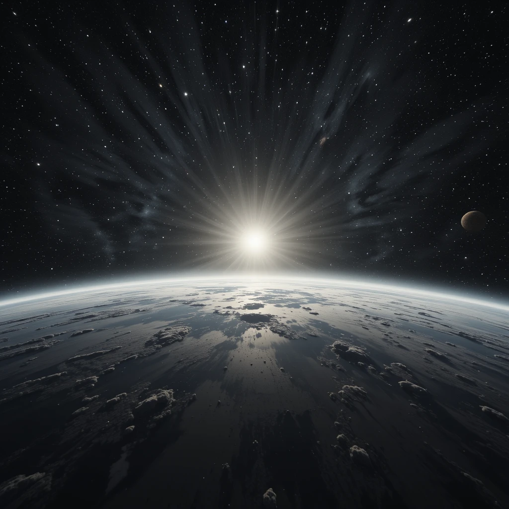

¿Alguna vez te has detenido a pensar si el Sol es realmente amarillo? Desde pequeños nos han enseñado que es así y es lo que vemos todos los días en el cielo. Pero la ciencia dice otra cosa. En esta página descubrirás cuál es el verdadero color del Sol, lo que han descubierto los científicos y cómo la atmósfera juega un papel importante en cómo lo percibimos engañando a nuestros ojos.
Por mucho tiempo, la gente ha pensado que el Sol es amarillo o anaranjado porque es como lo vemos desde la Tierra. Esto se debe a que dibujos, libros y hasta los medios nos han mostrado el Sol así. Pero en realidad, esto no es del todo cierto. La atmósfera de nuestro planeta cambia los colores de la luz del Sol, especialmente al amanecer y al atardecer, lo que hace que parezca de esos tonos cálidos.
El Sol emite luz de todos los colores visibles y cuando se combinan, producen una luz blanca. Por eso, si pudiéramos verlo desde el espacio, sin que la atmósfera de la Tierra distorsione su luz, lo veríamos como una esfera brillante y completamente blanca.
| Desde la Tierra | Desde el Espacio |
|---|---|
|  | |
| El Sol parece amarillo o anaranjado debido a la atmósfera terrestre. | El Sol se ve blanco brillante desde el espacio exterior. |
El Sol emite luz en todo el espectro visible, no solo en amarillo.
Desde el espacio, el Sol se observa blanco brillante.
La atmósfera dispersa la luz, cambiando la percepción del color solar.
La luz del Sol tarda 8 minutos y 20 segundos en llegar a la Tierra. Así que, si el Sol desapareciera de repente, no lo sabríamos hasta que pasaran esos 8 minutos.
El Sol combina todos los colores: rojo, naranja, amarillo, verde, azul y violeta.
Aunque parezca grande, el Sol es solo una estrella mediana en comparación con otras del universo.
¿Quieres ver cómo lo explican los científicos? Mira este video que detalla el color del Sol y cómo lo percibimos desde la Tierra.